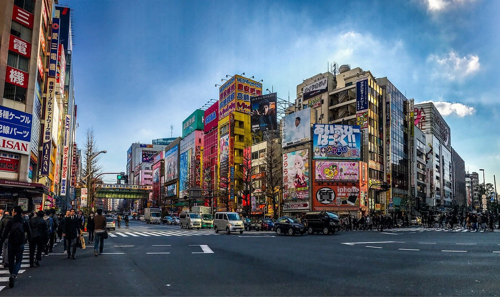

- Ginza
- Akihabara 

El mercado de mariscos mas grande del mundo,
mueve la asombrosa cantidad de 2400 toneladas
de mariscos al dia.
El centro de la cultura otaku de japon dedicado
al manga y a la electronica.